Digitalitzar una empresa equival a la digitalització coordinada de les seues unitats o departaments. El nom i nombre de departaments d'una empresa és una cosa que pot variar, depenent de la mida de l'empresa i la seua funció. Vegem els departaments tradicionals per a una empresa de mida mitjana-gran.

Amb la transformació digital no sols s'han modificat els departaments existents, sinó que s'han creat d'altres de nous. Vegem primer com ha pogut influir la transformació digital en alguns departaments:
- Departament Comercial: el seu objectiu és augmentar les taxes de resolució de dubtes o reclamacions en el primer contacte del client amb l'empresa. Per a açò és possible utilitzar xatbots basats en IA (amb aprenentatge automàtic o machine learning) per a identificar què està demanant el client i resoldre el seu problema. D'esta manera s'accelera el temps mitjà d'atenció al client i millora la gestió de recursos humans. Moltes consultes senzilles poden ser resoltes per un xatbot i les més complexes seran resoltes per un agent. A més a més es generaran informes de les consultes que no són resoltes pels xatbots per a millorar respostes en les següents ocasions.
- Recursos humans: l'ús de tecnologies punteres permet l'estalvi de temps per al personal. Així, este podrà dedicar-se a tasques que afegeixen valor a l'empresa. A més a més, la disponibilitat podrà ser les 24 hores del dia.
- Màrqueting: l'ús d'eines d'anàlisi que ajuden a entendre com és l'experiència de compra dels clients permetrà millorar les campanyes de màrqueting.
- Finances i comptabilitat: és un dels departaments que més es poden beneficiar de tecnologies com el blockchain (registre immutable i en temps real de transaccions i propietat) o la IA, eliminant fins al 90% de tasques administratives del departament amb la finalitat de guanyar precisió, baixar costs i aconseguir un flux de treball més eficient.
A continuació vegem alguns possibles departaments que han pogut aparèixer de nous a les empreses (alguns poden estar externalitzats):
- Tecnologia de la Informació (TI): s'ocupa de la infraestructura i els sistemes informàtics. Agrupa administradors de sistema, enginyers de xarxa, especialistes en seguretat cibernètica i tècnics de suport.
- Desenvolupament de programari: crea programes i aplicacions que optimitzen l'empresa, com desenvolupament web, aplicacions mòbils i programari personalitzat.
- Gestió de dades: s'encarrega de recopilar, emmagatzemar i gestionar la informació de l'empresa. Inclou analistes de dades i administradors de bases de dades.
- Seguretat de la informació: protegeixen les dades i sistemes de l'empresa d'amenaces cibernètiques, tant de manera preventiva com reactiva davant incidents de seguretat.
- Desenvolupament web i multimèdia: crea i manté la presència a Internet i genera continguts digitals.
- Suport tècnic: ajuda als empleats amb problemes tecnològics i brinda assistència per a resoldre problemes de hardware i software.
- Innovació i Estratègia Digital: identifica oportunitats per a aprofitar noves tecnologies i tendències digitals per a millorar l'eficiència de l'empresa.